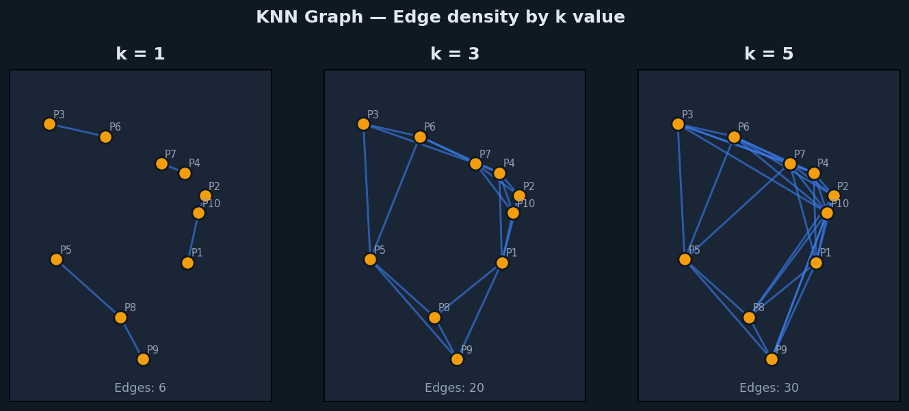
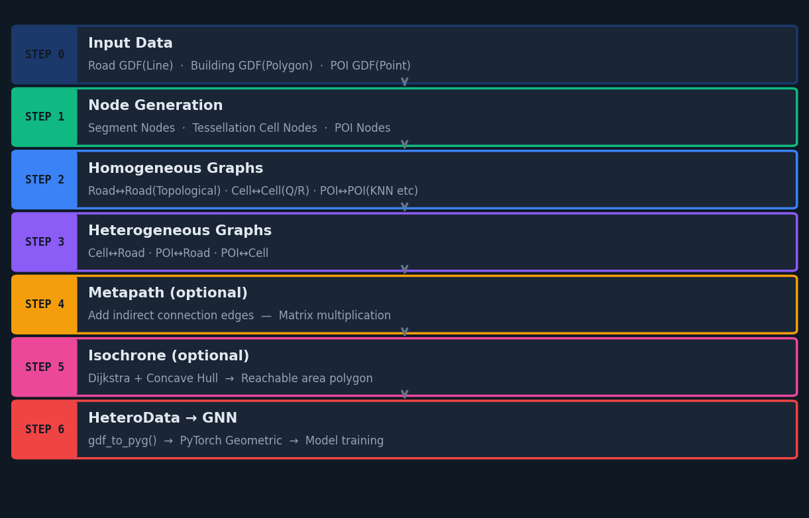
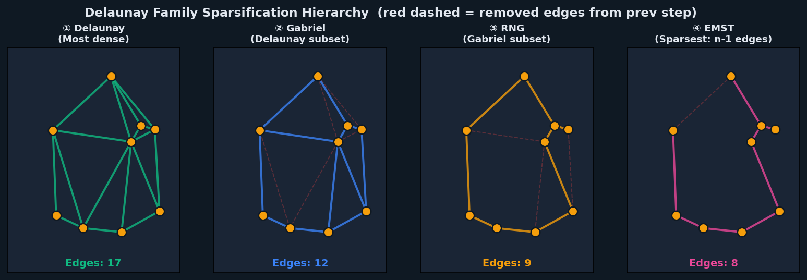
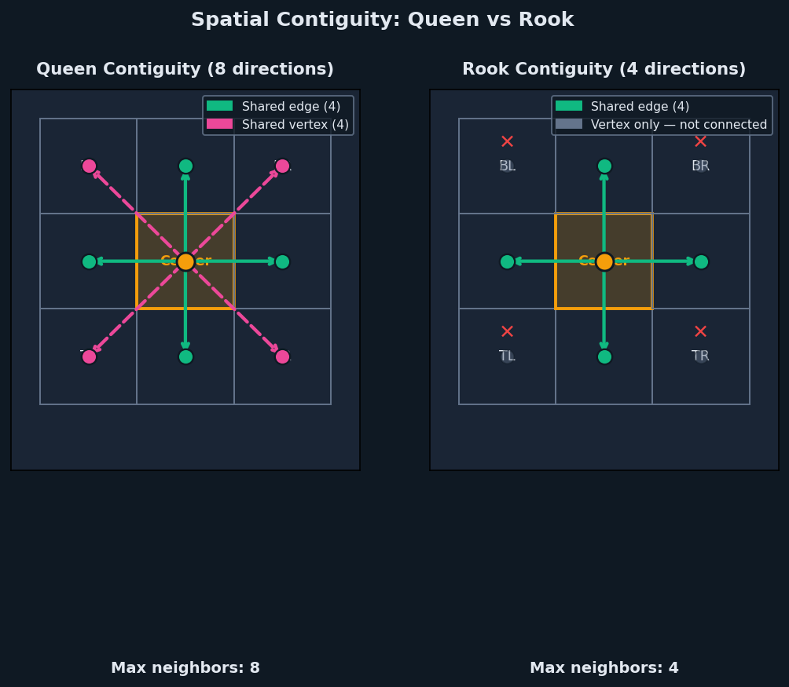
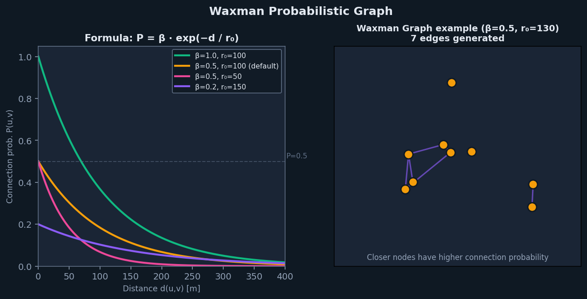
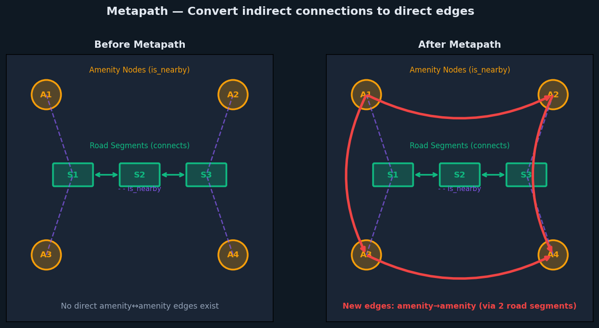

Summary
- Obsidian 노트가 Quartz 정적 사이트로 변환될 때 각 마크다운 요소가 어떻게 렌더링되는지 확인하는 테스트 문서다.
- 텍스트 강조, 헤딩, 표, 코드블록, 콜아웃, 이미지, 수식, 링크, 임베드를 한 문서에 모두 담았다.
- 각 섹션에는 정상 동작이 기대되는 예시와 깨질 가능성이 있는 예시를 함께 배치했다.
- 프론트매터의
cssclasses: max,tags,aliases가 Quartz에서 어떻게 처리되는지도 함께 점검한다.
텍스트 인라인 서식
일반 평서문이다. Quartz는 마크다운을 HTML로 변환하며, 한 줄 개행은 기본적으로 같은 문단으로 합쳐진다.
이 줄은 위 줄과 단일 개행으로만 구분했다 — 붙어서 렌더링되면 정상이다.
이 문단은 빈 줄로 구분했으므로 별도 문단이다.
강조
- 볼드체는 두 개의 별표로 표기한다.
- 이탤릭체는 하나의 별표로 표기한다.
- 볼드 이탤릭은 세 개의 별표로 표기한다.
- 하이라이트는 두 개의 등호로 표기한다. Quartz 기본 설정에서 지원 여부를 확인해야 한다.
취소선은 물결표 두 개로 표기한다.인라인 코드는 백틱으로 감싼다.볼드 + 인라인 코드조합도 확인한다.- **하이라이트 + 볼드** 중첩도 확인한다.
한글 강조 경계
한글 문서에서 강조 기호 바로 뒤·앞에 부호가 오면 렌더러가 인식하지 못하는 경우가 있다.
- 정상: 독립성(법적 절연)이 핵심이다.
- 정상: 퍼셉트론은 여러 입력을 받아 하나의 출력을 내보내는 알고리즘이다.
- 깨질 수 있음: **독립성(법적 절연)**이 핵심이다.
- 깨질 수 있음: 이것은 **강조.**다.
HTML 인라인 태그
- 단축키 표기: Ctrl + Shift + P
- 아래첨자: H2O
- 위첨자: E = mc2
- HTML mark 태그를 이용한 하이라이트
- 작은 글씨와 밑줄
특수문자와 이스케이프
- 이스케이프: *별표*, _언더스코어_, [대괄호], `백틱`
- 특수문자: — (em dash), – (en dash), … (말줄임표), © ® ™ § ¶ † ‡
- 화살표: → ← ↔ ⇒ ⇔
- 수학기호: ± × ÷ ≈ ≠ ≤ ≥ ∞ ∑ ∏ √ ∫
- 이모지: 🚀 ✅ ⚠️ 📊 (템플릿 규칙상 본문에는 쓰지 않지만 렌더 확인용)
- 한중일 혼용: 한글 / 漢字 / ひらがな / カタカナ
헤딩 위계
Quartz는 헤딩을 기준으로 목차(TOC)를 자동 생성한다. H1부터 H6까지 모두 배치해 TOC 생성 깊이를 확인한다.
H2 — 두 번째 수준
H3 — 세 번째 수준
H4 — 네 번째 수준 (템플릿 규칙상 금지, 렌더 확인용)
H5 — 다섯 번째 수준
H6 — 여섯 번째 수준
헤딩 링크 대상
이 헤딩은 아래 [내부 링크] 섹션에서 [[test#헤딩 링크 대상]] 형태로 참조한다.
리스트
순서 없는 리스트
- 1단계 항목
- 1단계 항목
- 2단계 항목
- 2단계 항목
- 3단계 항목
- 4단계 항목
- 3단계 항목
- 다시 1단계
순서 있는 리스트
- 첫 번째 단계
- 두 번째 단계
- 두 번째의 하위 항목
- 두 번째의 하위 항목
- 세 번째 단계
중간 번호에서 시작하는 리스트:
- 다섯 번째부터 시작
- 여섯 번째
- 일곱 번째
체크박스 (Task List)
- 완료되지 않은 항목
- 완료된 항목
- 중첩 체크박스
- 하위 완료 항목
- 하위 미완료 항목
Obsidian 확장 체크박스 상태 (Quartz 기본 지원 여부 확인):
- 연기됨
- 취소됨
- 질문
혼합 리스트
-
순서 항목 안에 불릿을 중첩
- 불릿 하위 항목
- 코드가 포함된 항목:
pip install polars
-
문단이 포함된 항목
이 문단은 리스트 항목에 속한 별도 문단이다. 들여쓰기로 소속을 표시한다.
-
코드블록이 포함된 항목
print("리스트 안의 코드블록")
정의형 리스트 (볼드 + 불릿 대체)
주요 파라미터
learning_rate— 학습률. 기본값은 0.01이다.batch_size— 배치 크기. 메모리 사용량에 직접 영향을 준다.epochs— 전체 데이터셋 반복 횟수다.
표
기본 표
| 컬럼 A | 컬럼 B | 컬럼 C |
|---|---|---|
| 값 1 | 값 2 | 값 3 |
| 값 4 | 값 5 | 값 6 |
정렬 지정 표
| 왼쪽 정렬 | 가운데 정렬 | 오른쪽 정렬 |
|---|---|---|
| left | center | right |
| 짧음 | 조금 더 긴 텍스트 | 1,234,567 |
서식이 포함된 표
넓은 표 (가로 오버플로 확인)
| ID | 이름 | 카테고리 | 서브카테고리 | 생성일 | 수정일 | 상태 | 담당자 | 우선순위 | 비고 |
|---|---|---|---|---|---|---|---|---|---|
| 1 | 아주 긴 이름을 가진 첫 번째 항목 | data-engineering | airflow | 2026-01-01 | 2026-08-06 | 진행중 | 홍길동 | High | 모바일에서 가로 스크롤이 생기는지 확인한다 |
| 2 | 두 번째 항목 | programming | python/pandas | 2026-02-15 | 2026-08-06 | 완료 | 김철수 | Medium | 표가 화면 밖으로 넘치지 않아야 한다 |
코드블록
언어별 문법 강조
Python
from dataclasses import dataclass
@dataclass
class Point:
x: float
y: float
def distance(self, other: "Point") -> float:
return ((self.x - other.x) ** 2 + (self.y - other.y) ** 2) ** 0.5
if __name__ == "__main__":
p = Point(0.0, 0.0)
q = Point(3.0, 4.0)
print(f"거리: {p.distance(q)}") # 한글 주석 렌더 확인SQL
SELECT
region_code,
COUNT(*) AS deal_count,
AVG(deal_amount) AS avg_amount
FROM real_estate.transactions
WHERE deal_date >= '2026-01-01'
GROUP BY region_code
HAVING COUNT(*) > 10
ORDER BY avg_amount DESC
LIMIT 20;Bash
npx quartz build --serve
rsync -av --delete public/ user@host:/var/www/blog/YAML
title: Quartz 변환 테스트
tags:
- tools/obsidian
nested:
key: value
list:
- a
- bJSON
{
"name": "quartz",
"version": "4.0.0",
"config": { "enableSPA": true, "enablePopovers": true }
}언어 미지정 (하이라이팅 없음 확인)
이 블록은 언어를 지정하지 않았다.
문법 강조가 적용되지 않아야 정상이다.
긴 줄 (가로 스크롤 확인)
result = some_very_long_function_name(argument_one=1, argument_two=2, argument_three=3, argument_four=4, argument_five=5, argument_six=6, argument_seven=7, argument_eight=8)코드블록 안의 마크다운 (이스케이프 확인)
# 이것은 헤딩으로 렌더되면 안 된다
**볼드도 그대로 보여야 한다**
```python
print("중첩된 코드 펜스")
```
> [!note] 이 콜아웃도 렌더되면 안 된다
> 접기 코드블록
긴 설정 파일 예시 (클릭해서 펼치기)
import { QuartzConfig } from "./quartz/cfg"
import * as Plugin from "./quartz/plugins"
const config: QuartzConfig = {
configuration: {
pageTitle: "My Second Brain",
enableSPA: true,
enablePopovers: true,
baseUrl: "example.com",
ignorePatterns: ["private", "templates"],
defaultDateType: "created",
},
plugins: {
transformers: [
Plugin.FrontMatter(),
Plugin.ObsidianFlavoredMarkdown({ enableInHtmlEmbed: false }),
Plugin.SyntaxHighlighting(),
Plugin.Latex({ renderEngine: "katex" }),
],
},
}
export default config콜아웃
템플릿 표준 5종
Summary
글 최상단의 핵심 요약에 사용한다.
- 불릿도 포함할 수 있다.
- 여러 줄 구성이 가능하다.
Note
본문 흐름에서 짚어둘 보충 정보에 사용한다. 볼드,
인라인 코드, 링크를 포함할 수 있다.
Warning
주의·함정·자주 하는 실수를 표시한다. 이 안에서도 하이라이트가 동작하는지 확인한다.
Tip
실용적인 팁과 권장 사항을 담는다.
Reference
접기 상태
기본 접힘 (하이픈)
이 내용은 처음에 접혀 있어야 한다. 클릭하면 펼쳐진다.
기본 펼침 (플러스)
이 내용은 처음부터 펼쳐져 있어야 하며, 클릭하면 접힌다.
콜아웃 안의 복합 콘텐츠
콜아웃 안의 코드블록
def hello(): return "콜아웃 내부 코드블록"
콜아웃 안의 표
항목 값 A 1 B 2
콜아웃 안의 수식
인라인 수식 와 블록 수식이다.
콜아웃 안의 이미지

중첩 콜아웃
바깥 콜아웃
바깥 내용이다.
안쪽 콜아웃
안쪽 내용이다. 중첩 렌더링을 확인한다.
3중 중첩
세 번째 수준이다.
제목 없는 콜아웃
Info
제목을 생략하면 타입 이름이 기본 제목으로 표시되어야 한다.
전체 타입 목록 (Quartz 지원 범위 확인)
note
abstract
summary
tldr
todo
tip
hint
important
success
check
done
failure
fail
missing
info
question
help
faq
warning
caution
attention
danger
error
bug
example
quote
cite
존재하지 않는 타입 (폴백 확인)
인용문
일반 blockquote다. 콜아웃 문법이 아닌 순수 인용이다.
여러 문단으로 구성된 인용문이다.
두 번째 문단이다. 볼드와
코드를 포함한다.
중첩 인용문이다.
안쪽 인용문이다.
세 번째 수준 인용문이다.
이미지
기본 임베드

그림. 크기를 지정하지 않은 기본 임베드
폭 지정 임베드
blog-image-sizing 스킬이 배정하는 800/520/320 세 가지 폭이 Quartz에서 동작하는지 확인한다.

그림. 폭 800 지정 — 다이어그램·전체 화면 이미지용
그림. 폭 520 지정 — 일반 본문 이미지용

그림. 폭 320 지정 — 작은 보조 이미지용
폭·높이 동시 지정

그림. 400x300 형식의 폭×높이 지정
표준 마크다운 이미지 문법
그림.  형식 — 위키링크가 아닌 표준 문법
외부 호스팅 이미지

그림. 외부 URL을 참조하는 이미지 — 네트워크 의존 렌더링 확인
HTML img 태그

그림. HTML <img> 태그 직접 사용
깨진 이미지 링크 (폴백 확인)

그림. 존재하지 않는 파일을 참조 — 빌드 실패 없이 폴백되어야 한다
인라인 SVG
그림. 문서에 직접 삽입한 SVG
image-layout 블록
Obsidian 커뮤니티 플러그인 image-layout의 문법을 로컬 Quartz 플러그인이 빌드 타임에 렌더링한다. 편집(Obsidian)과 배포(웹)가 같은 원문을 각자의 렌더러로 그린다.
캐러셀 (썸네일 포함)
layout: carousel이 이기므로 아래 grid는 무시돼야 한다.
custom ASCII 그리드
행은 공백으로 나눈다. 첫 이미지가 2×2를 차지하고 나머지가 오른쪽에 쌓여야 한다.
masonry-3
레거시 fence + 파이프 크기 지정
|300은 캡션이 아니라 폭 300px로 해석돼야 한다.
미지원 레이아웃·알 수 없는 옵션 (빌드가 깨지지 않아야 한다)
링크
외부 링크
- Quartz 공식 문서
- Obsidian Help
- 자동 링크: https://github.com/jackyzha0/quartz
- 맨 URL: https://www.example.com
- 타이틀 속성이 있는 링크
내부 링크 (위키링크)
- 같은 폴더의 노트: index
- 별칭 지정: 블로그 홈으로
- 헤딩 참조: test > 헤딩 링크 대상
- 헤딩 참조 + 별칭: 표 섹션 보기
- 경로 포함: index
- 존재하지 않는 노트: 이-노트는-존재하지-않는다
표준 마크다운 내부 링크
블록 참조
이 문단은 블록 ID를 가진다.
- 블록 참조 링크: test > ^test-block
임베드 (Transclusion)
노트 전체 임베드
HAEJUN RECORDS
Link to original
헤딩 임베드
Circular transclusion detected: test
블록 임베드
Circular transclusion detected: test
PDF 임베드 (지원 여부 확인)
각주
각주 참조를 본문에 삽입한다1. 두 번째 각주도 확인한다2.
인라인 각주도 테스트한다^[이것은 인라인 각주다].
수식 (LaTeX / KaTeX)
인라인 수식
시간 복잡도는 이며, 확률은 로 정의한다.
블록 수식
- — 평균
- — 표준편차
정렬 수식
행렬
한글 포함 수식 — \text{} 포장 대조
포장하지 않은 경우 (글자마다 이탤릭 변수로 취급되어 지저분해진다):
포장한 경우 (권장):
- 아래첨자 한글 분리:
- 숫자·단위 혼합: ,
수식 안 특수 케이스
- 달러 기호 이스케이프: 가격은 $100 이다.
- 수식 안 중괄호:
- 화학식: (mhchem 확장 지원 여부 확인)
다이어그램 (Mermaid)
graph LR A[Bronze 초안] --> B[Silver 정규화] B --> C{검증 통과?} C -->|Yes| D[content 발행] C -->|No| B D --> E[Quartz 빌드]
sequenceDiagram participant U as 사용자 participant S as blog-draft participant P as blog-publish U->>S: 노트 변환 요청 S->>S: formatter → sizing → editor S-->>U: 준비본 확인 요청 U->>P: 발행 승인 P-->>U: content 게시 완료
기타 요소
구분선
세 가지 표기법이 모두 같은 결과를 내는지 확인한다.
인라인 태그
본문 중간에 배치한 태그다: obsidian quartz-test
Quartz의 showTags 설정이 켜져 있으면 그래프 노드로 그려져야 한다.
HTML 블록
인라인 스타일이 적용된 커스텀 박스다. Quartz의 HTML 허용 범위를 확인한다.
HTML details 태그 단독 사용
접힌 영역 안의 마크다운이 렌더링되는지 확인한다. 볼드와 코드가 보이면 정상이다.
줄바꿈 처리
이 줄 끝에 공백 두 개를 넣었다.
따라서 이 줄은 <br>로 줄바꿈되어야 한다.
이 줄 끝에는 백슬래시를 넣었다.
이 줄도 줄바꿈되어야 한다.
빈 요소 처리
빈 리스트 항목:
- 정상 항목
연속 공백 문단 사이에 아무것도 없는 경우:
위 영역이 정상적으로 무시되는지 확인한다.
Reference